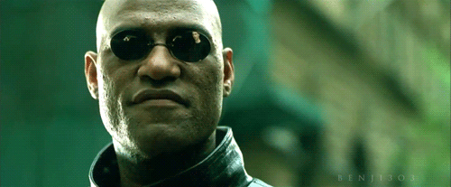

name: fade class: fade layout: true --- layout: true name: title class: center, middle, title --- layout: true name: big class: center, middle, big --- name: inverse layout: true class: center, middle, inverse --- layout:false # Test Slide (H1) <hr> ## H2 ### H3 Faces: <font face="DejaVu Sans">😈</font><font face="DejaVu Sans">üòá</font> #### H4 Text > Quoted <hr> --- --- # Goal & Non-Goal ## This talk should make you feel _uncomfortable_.<br> ## This talk is not intended to make anyone feel _unsafe_.<br> (Please follow up with organizers, per CoC.) --- # Comfort & Safety ## comfortable ## Environment is within tolerable parameters. -- ## safe ## Not in danger; free from harm's reach. --- # Comfort & Safety # Deceptively Similar in Their Presence -- ## When you feel comfortable... ## No action is necessary -- ## When you feel safe... ## No action is necessary --- # Comfort & Safety # Critically Different In Their Absence -- ## When you feel **un**-comfortable ### Corrective action is <b>possible</b> -- ## When you feel **un**-safe... ### Immediate corrective action is <b>necessary</b> ### Fight/flight response; very **draining** --- # Motivating Example <img align="right" src="Container-Desk-1.png"> ## Workplace setup is a matter of comfort --- # Motivating Example <img align="right" src="Container-Desk-2.png"> ## Workplace setup is a matter of comfort ## ... until it's a matter of safety. --- template: title # Use Your Superpower<br>To Be a<br>10× Developer ### @sammikes --- # 10× Developer ## The Mythical Man-Month: ### ...a group of ***experienced programmers***. Within just this group the ratios between ***best*** and ***worst***... --- # Interpretation ## ‚Äúoutput varies by **project** and **individual** and **metric**‚Äù ## common (incorrect) summary:<br> ‚Äúsome developers are 10× better than average‚Äù --- # Our brains have bugs ## Benham Disk <img align="right" width="400px" src="./disc.png"> --- # Our brains have bugs ## Benham Disk (Spinning) <img align="right" width="400px" src="./disc-spinning.gif"> --- # Our brains have bugs ## Benham Disk (Done) <img align="right" width="400px" src="./disc.png"> --- # Another Kind of Bug <img align="right" src="merge-arrow.jpg"> ## What do you think about the people in this car? --- # Fundamental Attribution Error ## We tend to believe -- ### <font face="DejaVu Sans">😈</font> others' actions are caused by (bad) character, not environment -- ### <font face="DejaVu Sans">😇</font> our actions are caused by (good) character, not environment -- ### <font face="DejaVu Sans">😇</font> our bad actions (if any) are caused by our environment -- ## In general we **underestimate** environmental factors --- # 10× ## Instead of looking for 10× **developers** ## We should be looking at **environments** -- ## Can we find 0.1× environments? --- # A Productivity-Destroying Environment <img align="right" src="Container-Desk-2.png"> ## How can we identify psychological factors that damage productivity? --- template: inverse # What if I Told You <img src="morpheus2.png" width="100%"> # They're All Around You --- # Your Super Power ## What if your super power was an *inability* to see factors that contribute to 0.1x environments? -- ## We call that super power ‚Äúprivilege‚Äù.  --- # A Productivity-Destroying Environment <img align="right" src="Container-Desk-2.png"> --- # A Productivity-Destroying Environment <img align="right" src="Container-Desk-2.png"> ## 1. Catastrophic Overflow --- # A Productivity-Destroying Environment <img align="right" src="Container-Desk-2.png"> ## 1. Catastrophic Overflow ## 2. Business As Usual --- # A Productivity-Destroying Environment <img align="right" src="Container-Desk-2.png"> ## 1. Catastrophic Overflow ## 2. Business As Usual ## 3. Little Things Add Up --- # Microaggressions ### social exchanges in which a person says or does something (possibly accidentally or without intended malice) that belittles and alienates a member of a marginalized group. -- ## Pouring sewage into a person's tank faster than they can pump it out. --- # Examples of Microaggressions ## Man (to a woman): You should get a tattoo or something to prove you're nerdy enough to be here. -- # Message: ## You don't belong here, you need to prove yourself. --- # Examples of Microaggressions ## Speaker 1: We need to get a motherly person at [location] to take care of us. ## Speaker 2: They're all too busy working out and looking pretty -- # Message: ## Women should do domestic work and be ornamental ‚Äî they are not engineers or project contributors. --- # What About Intent <img align="center" src="intent-tweet.png" width="500"> -- ### That's an unrealistic aspiration > Intent matters, but only after the fact, to distinguish between misunderstanding and threat --- ??? in high school I was hanging out with my friends; we were really into sarcasm. A woman I didn't know very well said something to me, and I interpreted as a backhanded compliment. So I responded in kind, with a self-deprecating sarcastic comment. ... and she ran out of the room crying. Because I had caused her tank to overflow. But my intent was good, right? So should I run after her and explain myself? No, of course not. I knew that even at the age of 17. --- # I know **I** don't do things like that -- ## Nobody ever calls me on them -- ## Fundamental Attribution Error --- # What If ## People are trying to call me on it, <br>but I'm ignoring them. -- ## People are choosing not to call me on it, <br>because they don't want to deal with me. --- <img align="center" src="vuln-tweet.png" width="750"> ??? So at JSFest Jenn threw down this challenge. I'm not going to talk about impostor syndrome, I don't know enough about it. (I am a world's expert on Dunning-Kreuger, though.) [laugh line] It's pretty hard for someone like me to make myself vulnerable. I am a straight, white, heterosexual, cis-gendered, well-off, male US citizen who is not too young and not too old. But I'll give it a shot. --- template: fade ??? Community A group of people who have _sacred values_ in common. --- # How to be a 10× Developer ### Do 10× times as much work (increase by ~1000%) --- # Motivational Quote ## There's no limit to the amount of good you can accomplish if you don't care who gets the credit. -- ## ‚Äî anonymous --- # How to be a 10× Developer ### Help 10 people each double their output (increase by 100%) -- ### Help 100 people each increase their output (increase by 10%) -- ### Help 1000 people each increase their output (increase by 1%) --- # First Steps ## Get a Buddy ### someone who will call you out if you overstep -- ## Pre-Commit To Positive Behaviors ### decide how you'll react when called out ### decide how you'll react to pushback --- # Use Your Privilege -- ## Shut Down Microaggressions ### as a privileged person, you are less vulnerable to pushback -- ### No Cookies ### reward is internal -- ### No Certainty --- # Guaranteed Mistakes -- ## Nobody Thinks They're a Jerk ### (Fundamental Attribution Error) -- ## In speaking out, you will make mistakes ### But saying nothing is a different kind of mistake --- template: big # It may feel un-**comfortable** # To help someone feel **safe** ??? Sometimes people feel like they can't or shouldn't contribute or respond because they might say the wrong thing. That's a good worry, and it probably will happen that you say the wrong thing. But consider that saying nothing is probably also a wrong thing. --- # Responding to microaggressions ## -We need to get a motherly person at [location] to take care of us. ## -They're all too busy working out and looking pretty -- ## Maybe you need a fatherly person instead. My kids say I make pretty good pancakes, how about if I come around tomorrow morning? --- # Responding to microaggressions ## You should get a tattoo or something to prove you're nerdy enough to be here. -- ## She doesn't need to do or have anything to prove she belongs here. # Being here is proof enough. --- # Thank You <img src="Container-Nearly-Empty.png" align="right"> ## May your tank be empty, and your pumps be strong. # ## Contact: @sammikes, smikes , cubane.com